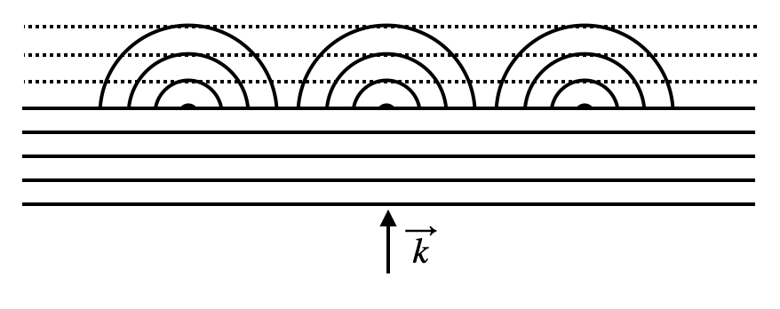

Huygens principle
Huygens’ principle is a theorem from wave optics that states that each point in space experiencing an electromagnetic wave acts as a source of spherical waves. This means that any wave can be expanded into a superposition of spherical waves, which is fundamental to phenomena like Mie scattering. While the classical understanding is that accelerated charges are the source of electromagnetic waves, Huygens’ principle provides a powerful mathematical framework for describing wave propagation and diffraction effects.

Plane Wave generated by Huygens Waves
Let’s use Huygens principle to understand how waves behave when they pass through a small opening like a slit. We can do this by treating many points along the slit as sources of waves, and seeing how these waves combine. This will help us understand diffraction - what happens when waves bend around edges. Remember the function we wrote down the last lecture, i.e.
\[\begin{equation} E=\frac{E_{0}}{|\vec{r}-\vec{r}_{0}|}e^{i k|\vec{r}-\vec{r}_{0}|} e^{-i\omega t} \end{equation}\]
that describes the spherical wave. We can use this as a python function
to calculate the electric field at a point in space. Let’s show first of all that we can reconstruct a plane wave from many spherical waves. We can do this by summing up many spherical waves with the same wavevector \(\vec{k}\) but different positions \(\vec{r}_{0}\). The code below does this for a plane wave propagating in the z-direction.
The result nicely shows the emergence of a plane wave from a sum of spherical waves. The intensity pattern is almost constant in the x-z plane, which is what we expect from a plane wave. The samll deviations are the result of the limited number of sources we used to sum up the spherical waves.
Focus pattern of a spherical mirror
Huygens’ principle can also be used to understand how light reflects off a spherical mirror. When light hits a mirror, it reflects off at an angle equal to the angle of incidence. This means that the light rays all converge at a single point called the focal point \(f\). We can use Huygens’ principle to understand how this happens by treating each point on the mirror as a source of waves. The code below calculates the electric field at a point in space due to a spherical mirror with radius of curvature \(R = 10\) µm.
The two images show the field and the intensity pattern of the spherical mirror. The field plot shows the wavefronts converging at the focal point, while the intensity plot shows the bright spot at the focal point where the light rays all converge. The spot in the center is the focal point. The intensity pattern is called the point-spread function of the mirror, and it tells us how light from a point source will spread out after reflecting off the mirror.
Diffraction by a Single Slit
We now want to do the same but only over a limited range of x. This is what we would do for a single slit. The code below does this for a single slit of width \(d=2\) µm. The next cell defines the space for our calculation again. The value of \(d\) denotes the slit width, which we want to vary to see the effect of changing slit width vs. wavelength, which we chose to be \(\lambda=532\) nm.
The next cell sums up the electric field of 200 spherical waves in the x-z plane, similar to the plane_wave_sum() function above but limited to sources within the slit width, such that we can plot the intensity or the field in space. Like the plane wave example, this demonstrates how multiple spherical waves combine, but now with sources constrained to a finite region.
Let us plot the wavefronts and the intensity pattern in space. As the intensity decays strongly with distance from the slit, we do that by taking the log of the intensity. The left plot shows the real part of the field, revealing the wave fronts as they emerge from the slit and propagate outward. The right plot shows the logarithm of the intensity pattern, which helps visualize how the light spreads out as it diffracts through the slit opening. The wave fronts start planar at the slit but gradually curve outward, while the intensity pattern shows characteristic diffraction fringes.
Farfield vs. nearfield
When light passes through a slit, the pattern of light we observe depends on how far away we measure it from the slit. We can divide this into two regions: the “near field” (at distance \(r \sim \lambda\)) and the “far field” (at distance \(r \gg \lambda\)). In the near field, which is typically within a few wavelengths \(\lambda\) from the slit, the light pattern closely resembles the shape of the slit itself. However, in the far field, which is at distances \(r \gg \lambda\), the light spreads out significantly and creates distinctive patterns of bright and dark bands. This spreading out of light is called diffraction. To demonstrate this difference, let’s look at two distances: a near field measurement at \(r = 1\) µm from the slit, and a far field measurement at \(r = 100\) µm away. These measurements will show how dramatically different the light patterns can be in these two regions.
The two plots below show the drastic difference between the diffraction pattern in the near field and the far field. The near field resembles indeed the shadow picture, while the far field intensity pattern is considerable wider than the slit. This even becomes worse, if we make the slit narrower.
Comparison to the analytical solution
Now that we understand how to calculate the diffraction pattern by adding up many Huygens sources (those spherical waves we created above), we can compare this to what physicists have worked out mathematically. When physicists solve this problem on paper, they do essentially the same thing we did in our code - they add up the contributions from many points along the slit, each acting as a source of waves. After doing all the math (which involves some complex calculus we won’t worry about now), they get a relatively simple formula for the intensity pattern far from the slit:
\[\begin{equation} I=I_{0}\left (\frac{\sin(\delta)}{\delta}\right )^2 \end{equation}\]
where \[\begin{equation} \delta=\frac{\pi d}{\lambda}\sin(\theta) \end{equation}\]
Here, \(I_0\) is just the maximum intensity, \(d\) is the width of our slit, \(\lambda\) is the wavelength of light we’re using, and \(\theta\) is the angle away from the center of the pattern (imagine drawing a line from the slit to any point on our screen - \(\theta\) is the angle between this line and the straight-ahead direction). Let’s see how well this mathematical formula matches up with our numerical calculation where we added up all those Huygens sources one by one.
The plot below compares two ways of calculating the same thing: the black dotted line shows our numerical simulation using 200 point sources of waves, while the solid black line shows the mathematical formula that physicists derived. As you can see, they match quite well! This tells us that our computer simulation using Huygens’ principle (adding up lots of wave sources) gives nearly the same result as the mathematical solution.
An interesting question to consider is: how many wave sources do we need to get an accurate result? Right now we’re using 200 sources spread across the width of the slit, but would 100 be enough? What about 1000? You can modify the code above to try different numbers of sources and see how it affects the accuracy of the simulation compared to the mathematical solution. This helps us understand how many “points” of light we need to consider to get a good approximation of reality.
Let’s explore how changing different parameters affects our diffraction pattern! Two key things we can adjust are:
- The wavelength of light (λ) - try using red light (650nm) versus blue light (450nm)
- The width of the slit (d) - what happens when you make it wider or narrower?
You can modify these values in the code above and observe how the pattern changes. What patterns do you notice? Does the diffraction spread out more or less when you use longer wavelengths? What about with wider slits?
Multiple Slits
An even more interesting case is when we have multiple slits side by side - this is called a diffraction grating. Diffraction gratings are used in many real-world applications, from spectrometers that analyze starlight to the rainbow patterns you see on DVDs and CDs.
Let’s look at what happens with multiple slits in a row, each separated by a distance D. The mathematical formula for this gets a bit more complicated, but it’s just combining two effects:
- The single-slit diffraction pattern we saw before (the sin(δ)/δ term)
- A new term that accounts for how the waves from multiple slits interfere (the sin(Nγ)/sin(γ) term)
Here’s the full formula for the intensity pattern:
\[\begin{equation} I=I_{0}\left (\frac{\sin(\delta)}{\delta}\right )^2\left (\frac{\sin(N\gamma)}{\sin(\gamma)}\right )^2 \end{equation}\]
where
\[\begin{equation} \gamma=\frac{\pi D}{\lambda}\sin(\theta) \end{equation}\]
N is the number of slits, D is the distance between slits, and the other terms are the same as before.
Let’s implement a function to simulate a diffraction grating using Huygens’ principle:
Now we implement the analytical formula for the intensity pattern of a diffraction grating:
Let’s visualize the diffraction grating pattern:
Try modifying the code to explore:
- What happens when you change the spacing D between slits?
- How does the pattern change if you use more or fewer slits?
- Can you explain why a CD or DVD creates rainbow patterns in sunlight based on what you’ve learned about diffraction gratings?
Rayleigh-Debye-Gans Theory for Particle Scattering
We have now looked at the scattering from 2-dimensional structures and it its time to look how we could model the scattering from a 3-dimensional structure from that. Usually one would now refer to Mie scattering theorie, which is made for plane wave scattering on spherical particles or arbitrary size. Yet, the physics behind Mie scattering is quite complex and involves solving the Maxwell equations for a spherical particle.
A more illustrative theory is the Rayleigh-Debye-Gans (RDG) theory, which provides a framework for understanding light scattering from particles that are larger than the Rayleigh regime but still satisfy certain conditions regarding their optical properties.
Theoretical Background
The Rayleigh-Debye-Gans (RDG) theory represents an important intermediate approach between simple Rayleigh scattering (for very small particles) and more complex Mie scattering (for arbitrary sized spherical particles). It provides a framework for understanding light scattering from particles that are larger than the Rayleigh regime but still satisfy certain conditions regarding their optical properties.
RDG theory is based on two key physical approximations:
- The relative refractive index is close to 1: \(|m-1| \ll 1\), where \(m = n_{\text{particle}}/n_{\text{medium}}\)
- The phase shift is small: \(2ka|m-1| \ll 1\), where \(k\) is the wave number and \(a\) is the particle size
These conditions allow us to make two important simplifications:
- The incident field penetrates the particle with minimal refraction or reflection
- Each volume element of the particle scatters light independently
Mathematical Foundation
When a plane wave encounters a particle, each volume element experiences the incident field with a different phase that depends on its position. The incident field at position \(\vec{r'}\) within the particle can be written as:
\[E_{inc}(\vec{r'}) = E_0 e^{i\vec{k}_{inc}\cdot\vec{r'}}\]
This spatial variation of phase is crucial to understanding the scattering process. When light scatters from this particle, the scattered electric field at a far-field observation point \(\vec{r}\) can be written as:
\[E_{sca}(\vec{r}) = \frac{e^{ikr}}{r} \frac{k^2}{4\pi} (m^2-1) \int_V e^{i\vec{k}_{inc}\cdot\vec{r'}} e^{-i\vec{k}_{sca}\cdot\vec{r'}} dV'\]
This can be rewritten using the scattering vector \(\vec{q}\):
\[E_{sca}(\vec{r}) = \frac{e^{ikr}}{r} \frac{k^2}{4\pi} (m^2-1) \int_V e^{i\vec{q}\cdot\vec{r'}} dV'\]
where:
- \(\vec{r}\) is the observation point position vector
- \(\vec{r'}\) is the position vector inside the particle
- \(\vec{q} = \vec{k}_{inc} - \vec{k}_{sca}\) is the scattering vector (difference between incident and scattered wave vectors)
- \(V\) is the particle volume
- \(m\) is the relative refractive index
The integral term in this equation is known as the form factor \(F(\vec{q})\):
\[F(\vec{q}) = \int_V e^{i\vec{q}\cdot\vec{r'}} dV'\]
The form factor encapsulates both the phase variation of the incident wave across the particle and the phase differences in the scattered waves reaching the observation point. It is essentially the Fourier transform of the particle’s shape, and it determines the angular distribution of scattered light. The scattered intensity is proportional to \(|F(\vec{q})|^2\).
Relationship to Huygens’ Principle
RDG theory beautifully illustrates Huygens’ principle at work. In this framework:
- The incident plane wave propagates through the particle with different phases at different positions
- Each volume element of the particle acts as a source of a secondary spherical wave with:
- An amplitude proportional to the incident field at that position and the refractive index contrast
- An initial phase equal to the phase of the incident wave at that position
- Additional phase evolution as the scattered wave propagates to the observation point
The total scattered field is the coherent superposition of all these secondary wavelets, accounting for: - The variation in initial phases due to different optical path lengths of the incident wave to each volume element - The phase differences that arise as scattered waves travel from different volume elements to the observation point
This direct application of Huygens’ principle is precisely what we’ll calculate in our numerical implementation.
Scattering Regimes
Particle scattering behavior can be categorized by the size parameter \(x = ka = 2\pi a/\lambda\):
- Rayleigh Regime (x << 1): Particles much smaller than the wavelength scatter light approximately equally in all directions.
- RDG Regime (x > 1, but |m-1| << 1): Particles larger than the wavelength but with small refractive index contrast show distinctive angular scattering patterns determined by the particle shape.
- Mie Regime (x ≥ 1, any m): Requires the full solution of Maxwell’s equations for arbitrary sized spherical particles.
For these conditions, the incident field can be assumed to propagate through the particle with minimal distortion, allowing each volume element to scatter as if it were illuminated by the unperturbed incident wave.
We can visualize the scattering patterns for different particle shapes:
The scattering patterns demonstrate how particles of different shapes and sizes interact with light. This is a direct application of Huygens’ principle, where each volume element of the particle acts as a source of spherical waves. The phase relationships between these waves determine the resulting scattering pattern.
Key observations: 1. For small particles (ka << 1), scattering is more isotropic (Rayleigh regime) 2. As particle size increases, forward scattering becomes more pronounced 3. Different particle shapes produce characteristic scattering patterns 4. Scattering intensity generally decreases with increasing angle
Note on the 3D Grid Approach
For RDG simulations, we need to represent the particle as a collection of volume elements. Our implementation uses:
- Regular 3D grid - We create a simple cubic grid of points
- Sphere masking - We only use points that fall within the sphere radius
- Direct calculation - Each point acts as a Huygens wavelet source
The accuracy of the simulation depends on the grid resolution. For more accurate results, increase num_points_per_dim, but be aware that computation time increases with the cube of this value.
This technique is widely used in fields like colloid science, atmospheric physics, and biomedical optics to characterize particles based on their light scattering properties.